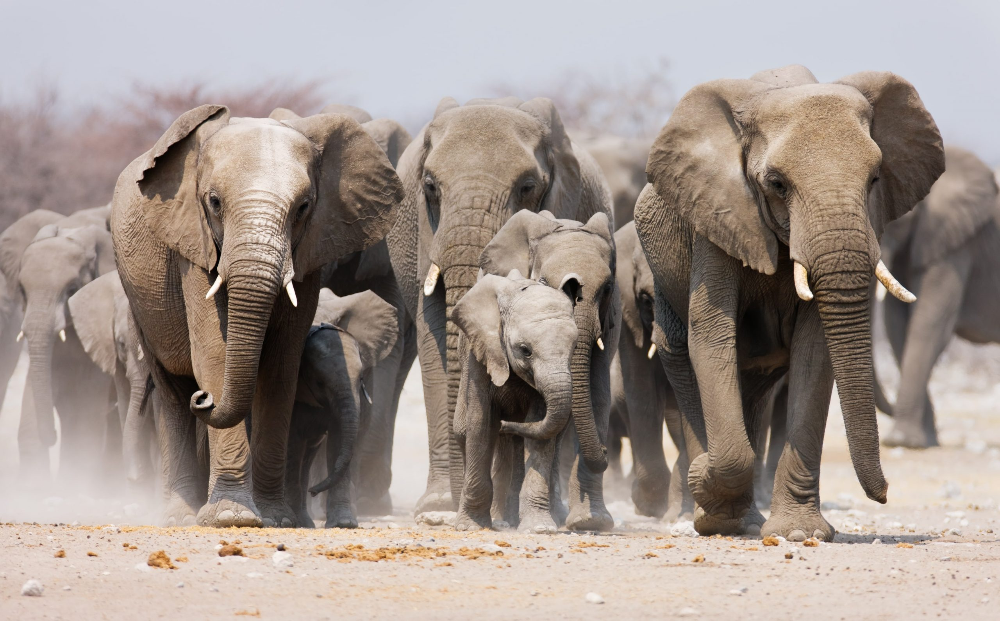

Tarzan está correndo pela floresta quando se assusta ao ver uma manada de elefantes correndo, a manada está muito rápida e logo a frente há três pequenos filhotes de tigre distraídos e eles podem ser pisoteados pela manada, como Tarzan poderá salvar o filhotes?
1 - Tentar assustar os elefantes para o outro lado.
2 - Correr ao máximo e tentar tirar os filhotes do caminho.